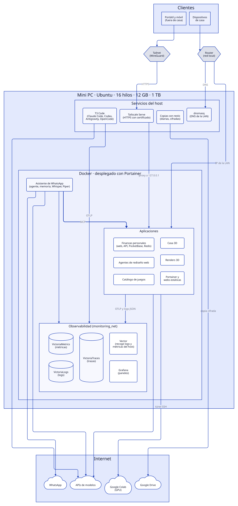

Un mini PC como servidor casero: red privada, Docker, observabilidad y agentes de IA
En casa tengo un mini PC encendido todo el día que hace de servidor. Ahí corren mis proyectos personales, un asistente de WhatsApp, el sistema de copias de seguridad y los agentes de IA con los que programo. Nada de eso está abierto a Internet: solo se llega desde la red de casa o desde mis dispositivos a través de Tailscale.
Este post describe cómo está montado, con un diagrama de todas las piezas y las reglas que sigo para que el conjunto no se convierta en un caos.


El hardware
Un mini PC de sobremesa con Ubuntu 26.04, 16 hilos, 12 GB de RAM disponibles y 1 TB de disco. Consume poco y da de sobra para una treintena de contenedores. Lo único que no tiene es GPU: lo que la necesita (renders 3D, por ejemplo) se ejecuta en una VM de Google Colab que el servidor enciende y controla por un túnel SSH.
La red: nada expuesto a Internet
La regla principal es que ningún servicio se publica en Internet. Hay dos formas de llegar al servidor:
- Desde fuera de casa, por Tailscale. El portátil y el móvil están en mi tailnet (una red privada sobre WireGuard). Tailscale Serve publica cada servicio en HTTPS, con un certificado válido, en el nombre del servidor dentro del tailnet. No hace falta abrir puertos en el router ni montar un proxy inverso propio.
- Desde la red de casa. El servidor tiene una IP fija
reservada en el DHCP del router. Para los dispositivos que no tienen
Tailscale, un
dnsmasqresuelve los nombres internos a esa IP.
Un detalle importante: Docker se salta el cortafuegos del
host. Un mapeo del tipo 8080:8080 en un
docker-compose.yml escucha en todas las interfaces, aunque
el cortafuegos local lo bloquee. Por eso todos los servicios publican sus
puertos de forma explícita en dos sitios: 127.0.0.1 (adonde
apunta Tailscale Serve) y la IP de la red local.
ports:
- "127.0.0.1:8080:8080" # destino de Tailscale Serve
- "${LAN_IP:?}:8080:8080" # red localsudo tailscale serve --bg --https=8443 http://127.0.0.1:8080Los servicios sin autenticación, como las bases de datos o los almacenes de
métricas, ni siquiera se publican en la red local: solo en
127.0.0.1.
Docker y Portainer
Todo servicio de larga duración (una API, una web, un bot, un
worker) vive en Docker, con su Dockerfile y su
docker-compose.yml en el repositorio del proyecto. Cada proyecto
se despliega como un stack de Portainer, así que
desde una sola interfaz veo qué está corriendo, sus logs y su estado, y puedo
reiniciarlo desde el móvil.
Observabilidad: métricas, logs y trazas
Con tantos servicios, hace falta saber qué pasa sin entrar en cada contenedor. El stack es ligero y está entero en Docker:
| Pieza | Qué guarda | Retención |
|---|---|---|
| VictoriaMetrics | Métricas del host y de las aplicaciones | 3 meses |
| VictoriaLogs | Logs de todos los contenedores | 30 días |
| VictoriaTraces | Trazas de OpenTelemetry | 14 días |
| Vector | Recoge los logs de Docker y las métricas del host | — |
| Grafana | Paneles y exploración | — |
Para que funcione sin configurar nada por proyecto, todos siguen el mismo contrato:
- Logs en JSON de una línea por
stdout, conlevelymessage. Nunca en archivos dentro del contenedor. Vector los recoge de Docker y los etiqueta con el nombre del servicio. - Métricas y trazas por OTLP (OpenTelemetry). Cada aplicación lee el destino de variables de entorno: si no están definidas, no exporta nada y no falla.
- El
trace_idactivo va dentro de cada línea de log, así que en Grafana se salta de un log a su traza con un clic.
Copias de seguridad
Un único sistema para todo el servidor, en vez de un script por proyecto:
- restic cifra y deduplica; rclone lo envía a Google Drive.
- Copia diaria de madrugada, con retención de 7 diarias, 4 semanales y 12 mensuales. Cada domingo se purgan las copias antiguas y se verifica una muestra de los datos.
- Cada proyecto declara qué rutas se copian en un archivo de configuración. Si tiene bases de datos, añade un hook que genera un volcado consistente antes de la copia.
- El resultado de cada copia se envía como métrica a VictoriaMetrics: si falla, se ve en Grafana.
Solo se copia lo que no se puede regenerar: código, configuración, volúmenes con datos y volcados. Dependencias, cachés y modelos descargables se quedan fuera.
Agentes de IA que siguen las mismas reglas
Buena parte del código del servidor lo escriben agentes de IA. Uso T3 Code, una interfaz web que corre en el propio servidor (como servicio de systemd) y desde la que lanzo Claude Code, Codex, Antigravity u OpenCode. Como está detrás de Tailscale, puedo trabajar igual desde el portátil que desde el móvil.
La pieza que hace que esto escale es un archivo de instrucciones
global con todas las reglas de este post: cómo publicar puertos,
cómo estructurar los logs, qué variables de OpenTelemetry usar, cómo añadir un
proyecto a las copias, etc. Cada proyecto tiene además su propio
AGENTS.md, y los nombres que espera cada herramienta
(CLAUDE.md, GEMINI.md) son enlaces simbólicos al
mismo archivo. Da igual qué agente use: todos leen las mismas reglas, y un
servicio nuevo sale ya con Docker, puertos bien publicados, logs JSON y
telemetría.
Las convenciones se escriben una vez, en un sitio que leen todos los agentes, en lugar de repetirlas en cada conversación.